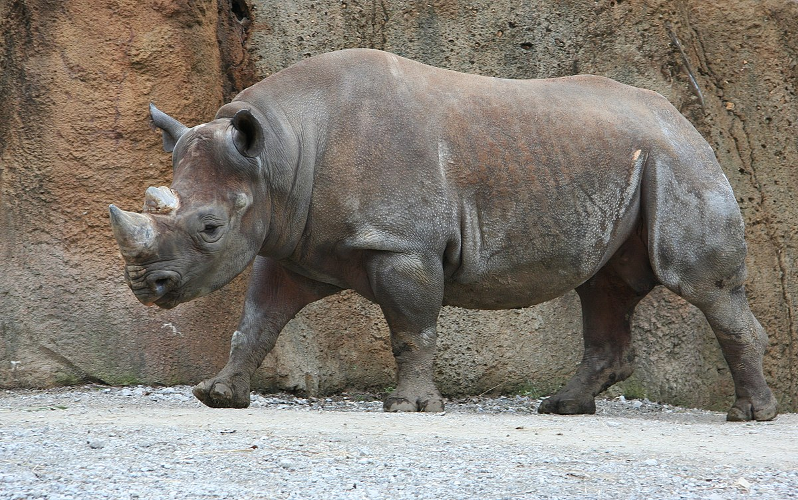

Rhinos
While the unicorn might be mythical, there's a somewhat similar animal with a majestic horn as well. You're disapointed to see that the rhinos don't appear to be outside. Yet there is a perfectly good solution to this, as the rhinos have an indoor viewing area-- and it's inside! The perfect way to get out of the sun. Peaking into the building you see the giant creature covered in dirt (again to keep cool). It's huge size is similar to that of an elephant, and its lazy demenur is the opposite of a certain other african animal. You move to enter the room fully only to have the most wretched smell reach your nose. YUCK! you run through the tunnel-like building quickly as to get a closer look without having to smell any more of the rhino's stink.
Luckily there's a sign at the outside exhibit for you to read so that you don't need to endure any more smell to learn more. The sign reads as follows:
How big are rhinos?
The largest rhino species is the white rhino, according to the San Diego Zoo. It grows to 12 to 13 feet (3.7 to 4 meters) long and up to 6 feet (1.8 m) from hoof to shoulder. It weighs around 5,000 lbs. (2,300 kilograms).
The smallest rhino species is the Sumatran rhino. It grows to 8 to 10 feet (2.5 to 3 m) long and up to 4.8 feet (1.5 m) from hoof to shoulder. The Sumatran rhino weighs around 1,765 lbs. (800 kg).
Diet
Rhinoceroses are herbivores, which means they eat only vegetation. The type of vegetation they eat varies by species. This is because their snouts are different shapes to accommodate different types of food, according to National Geographic. For example, the black rhino eats trees or bushes because its long lips allow it to pick leaves and fruit from up high. The white rhino has a flat-shaped snout that lets it get closer to the ground for eating grass.
Offspring
Every two and a half to five years, a female rhino will reproduce. Female rhinos carry their young for a gestation period of 15 to 16 months. They usually only have one baby at a time, though they do sometimes have twins. At birth, baby rhinos, which are called calves, are still quite big, at 88 to 140 lbs. (40 to 64 kg), according to the San Diego Zoo.
At around 3 years old, the calf will set out on its own. A rhino can live up to 45 years.
Click here to learn more about rhinos.